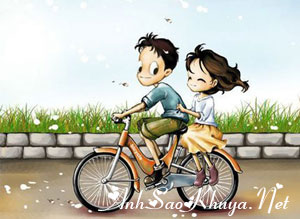

|
Nó và hắn quen nhau trên 1 diễn đàn.Một buổi sáng ấm áp,được nghỉ học.Nó ngồi 1 mình trong phòng,vào forum online,nghe nhạc...và thế là gặp hắn..Một tên bằng tuổi...Học cách xa trường nó...chắc phải vài chục cây số là ít...Nó nghĩ vậy và cũng chẳng quan tâm về hắn nhiều lắm....Chắc cũng chỉ quen biết vậy thui chứ chẳng bao giờ nó nghĩ là sẽ gặp hắn..Bởi thế mà nó lừa hắn nhiều chuyện,từ cái tên,rồi cả trường nó học nữa,nó nói dối tất cả...Nó cũng ko nghĩ rằng hắn lại tin lời nó như thế...Nó bảo học ở trường sư phạm trong khi nó học kinh tế,trường nó cách trường sư phạm đến 10km ấy chứ....Nó bảo hàng ngày phải đạp xe đạp đi học thế mà hắn cũng tin..Ngày 20/11 hắn nhắn tin chúc mừng nó...và kể với nó nhiều chuyện....Nó buồn cười lắm nhưng cũng cảm thấy vui và hạnh phúc..suy cho cùng nó thấy thật là khâm phục tài năng nói dối của mình đã lừa được 1 thằng ngốc như hắn... Nó và hắn nói với nhau nhiều chuyện nhưng cách xưng hô của nó với hắn thì kì lạ lắm ..lúc thì nó kêu ghét hắn lúc thì kêu yêu hắn..lúc thì nó bảo coi hắn là kẻ thù lúc thì gọi hắn là ông xã...Đôi lúc cãi nhau nó thấy thật là phiền phức và ko thèm nhắn tin cho hắn nữa...nhưng rồi khi hắn xin lỗi thì nó lại tươi cười như trước..nó cảm thấy vui vì nói chuyện như thế với hắn... Hắn thì có vẻ cục cằn khô khan nhưng khi thấy nó nói yêu là trái tim hắn lại xúc động lắm,có vẻ hắn chân thật và thích cái tính trẻ con của nó...Hắn tự nhủ sẽ phải tán nó cho bằng được...và thế là hắn đòi gặp nó... Một lần hắn về quê,định ghé qua trường gặp nó nhưng chỗ nó trọ cách trường tận 10km cơ mà...."Trời đất!Đúng là ngốc về quê mà còn gặp người ta thì có mà lỡ xe về quê àh?-Nó nghĩ vậy và thấy thương cho hắn,nó lại càng thấy hối hận về việc mình làm..nhưng biết làm sao hắn đòi gặp nó cơ mà..."Mặc kệ!gặp thì gặp.Lo gì!"... Nhưng rồi hắn lại ko gặp nó nữa.Hắn phải về quê có việc,nhớ nhà nữa...Hắn nói thế với nó và để khất lại lần sau..nó thở phào nhẹ nhõm"Thế là mình ko phải cắn dứt lương tâm khi làm thế với hắn.Đúng là đồ ngốc" Nó bảo hắn là ngốc....ngốc nhưng đáng yêu... -"Ủa?Sao bảo tớ ngốc?"-Hắn hỏi nó khi hắn với nó chát với nhau.. -"Thì tớ thấy thế.Ngốc nhưng đáng yêu lắm!hihi.." -"Hic..Cái gì mà đáng yêu?Lại còn thế nữa,chẳng có ai bảo tớ như vậy,con gái thì lại càng ko"-Hắn thật thà bảo vậy với nó.. -"Vậy àh?Thế cậu có thích ko?hihi...." -"Thích gì?chả hiểu gì cả...hichic..mà tớ buồn cười lắm hả?.."... -"Hic...Thì tớ thích gọi cậu như thế.Vậy mà cũng hỏi...Ngốc quá đi!.-Nó tủm tỉm cười vì đúng là hắn ngốc thật..Hắn đang bị nó lừa mà... Hắn chả hiểu gì cả nhưng hắn vui lắm chưa ai bảo hắn như thế cả,với con gái thì lại càng ko nhưng mà đúng là hắn ngốc thật..Chưa một lần gặp nó thế mà đòi yêu nó...lại còn tin lời nó nói nữa chứ......Nó thấy gọi hắn như thế là quá đúng nhưng còn đáng yêu thì nó cũng ko biết là hắn đáng yêu ở chỗ nào...Có lẽ là nó nói thế để cho hắn bớt giận nếu như mà hắn có phát hiện ra là nó đang nói dối hắn...  Thế rồi hắn đòi gặp nó thật...Nó lo lắng lắm.Ko biết là gặp rồi thì nó sẽ phải làm thế nào để nói ra sự thật...rồi hắn sẽ nghĩ như thế nào?Có còn coi nó là bạn nữa hay ko?Nó nghĩ nhiều lắm..nhưng rồi nó quyết định là sẽ gặp hắn...Gặp rồi nó sẽ kể với hắn mọi chuyện..."Thôi thì cứ thử xem sao,dù sao chuyện cũng đã rồi,mình cũng ko muốn nói tiếp tục nói dối như vậy nữa"Nó tự nhủ với mình như thế..... Và thế là nó gặp hắn thật.Nó cũng ko nghĩ là hắn bỏ cả 1 ngày chủ nhật đi quãng đường dài tận những 30km để đến gặp nó trong khi hôm đó nó còn có ý định ko thèm gặp hắn.Tại hôm ấy nó phải ra chỗ bạn có việc nên nó tự nhủ nếu kịp thời gian về nhà thì nó sẽ gặp còn ko thì kệ,cho hắn bị lừa 1 trận...dù sao hắn cũng đã bị nó lừa nhiều rồi,lừa thêm 1 lần nữa cũng chẳng sao.. Thật may cho hắn là hôm ấy nó về nhà sớm.Nhưng hôm ấy nó buồn lắm.Nó gặp lại người nó từng yêu 2 năm trước..Người đó giờ đã có người yêu rồi..đó là cô bạn cùng lớp nó...Nó biết điều ấy từ lâu rồi nhưng nó vẫn thấy buồn..một cảm giác gì đấy cô đơn và trống trải lắm.Nhìn 2 người thân mật với nhau,trái tim nó như đang vỡ vụn ra thành từng mảnh.Nó thấy mình thật là ngốc khi vẫn còn chờ đợi khi biết rằng điều đó chỉ là hi vọng nhỏ nhoi.Nó vẫn chưa có người yêu và giờ thì nó phải yêu 1 ai đó để lấp đầy nỗi khổ đau đang dâng trào trong lòng nó bây giờ..."Nhưng yêu ai bây giờ nhỉ?".-Nó phân vân lựa chọn...Nó nghĩ đến những người mà nó từng quen và cả những người đang theo đuổi nó nữa...và bỗng nhiên nó nhớ đến hắn.Phải!Nó sẽ yêu hắn.Nó ra về và tự nhủ như thế...Yêu hắn để quên đi 1 người...Đó sẽ là ngày cuối cùng nó ko còn nhớ về quá khứ nữa.Nó sẽ bắt đầu một cái mới với hắn.Hắn đã tin tưởng nó thế cơ mà.... Gặp hắn,nó ko nói được gì nhiều,nó cũng ko kể chuyện nó đã lừa dối hắn như thế nào...Có lẽ là nó ngại..ngại khi gặp 1 người như thế..1 người mà nó đã nói dối ngay từ lần đầu nói chuyện.Nó thấy buồn..một nỗi buồn khó tả....giờ thì nó ko bít là sẽ nói với hắn những gì nữa.... Hắn thì vẫn vậy,vẫn tin tưởng nó...Gặp nó hắn có vẻ vui lắm..Hắn đèo nó trên chiếc xe đạp của nó....Cái xe đạp mà nó đã lừa là phải đi mượn để ra đón hắn nhưng thực ra là xe của nó,nó vừa đi ra chỗ bạn nó về bằng chính cái xe đó....Nó chẳng biết nói gì,chỉ biết ngồi sau xe hắn tủm tỉm cười..và hắn cũng thế.Có lẽ hắn thích khi được đèo con gái như vậy.Đã lâu rồi hắn chưa có cái cảm giác hạnh phúc như thế kể từ cái ngày hắn chia tay mối tình đầu.Nhìn nó và hắn giống như 1 đôi.Hạnh phúc đi bên nhau trên con đường trải đầy nắng và gió...Cảm giác ấm áp đan xen trong nó và hắn.... Hắn đến nhà trọ của nó và gặp cô bạn cùng phòng của nó...Hắn nói chuyện với cô bạn ấy nhiều hơn là nói với nó..Nó thấy mình lạc lõng...và có cái gì đó ấm ức..Nó thấy hắn có vẻ hợp với cô bạn ấy thì phải.....Chẳng lẽ quyết định cuối cùng của nó là lựa chọn hắn giờ lại ko thể thực hiện được?..Nó buồn.. Nó đưa hắn về..Hắn mua kẹo mút cho nó đúng như lời hứa..Nó giận,giận vì hắn chẳng thèm quan tâm tới nó khi ở nhà trọ...Nó mặc kệ cho hắn vất vả đèo nó đến toát mồ hôi...Nó thấy mình thật là ngốc,có gì đâu mà phải ghen chứ nhưng thực sự trong thâm tâm nó thấy thương hắn đến lạ...Nó thấy thật buồn vì phải chia tay hắn,giá như quãng đường đưa hắn về dài thêm một chút..và giá như nó có thể nói với hắn nhiều hơn.... Về đến nhà hắn nhắn tin cho nó.Nó thấy vui lắm,trong lòng có cảm giác gì đó ấm áp đến lạ.Hóa ra hắn ko phải là ko quan tâm đến nó mà là vì hắn thấy nó ít nói khi gặp hắn nên hắn ngại...Nghe hắn nói vậy nó thấy vui lắm,nó nhắn tin với hắn được 2 hôm thì thôi ko liên lạc cho hắn nữa.Nó lo lắng..và đang phân vân suy nghĩ có nên nói ra sự thật cho hắn biết ko nữa..rằng nó ko phải tên là Trang và cũng ko phải là 1 cô giáo...rồi cả chuyện nó ở trọ cách trường 10km,hàng ngày phải đạp xe đi học nữa chứ.Nó buồn..và ko biết nói ra hắn sẽ nghĩ như thế nào về nó.Hắn còn tin tưởng nó nữa ko? -"Ủa?Sao giờ ko nhắn tin cho tớ nữa àh?"-1 tin nhắn của hắn được gửi tới. -"Ngok ơi!Cho nhok xin lỗi nhé,nhok đã nói dối ngok.Nhok ân hận quá àh!hichic..."-Nó send lại tin nhắn cho hắn -"Hic.Sao vậy?Sao lại xin lỗi tớ hở nhok?" -"Tớ ko phải là cô giáo.Tớ học kế toán cơ.Tớ cũng ko muốn nói dối cậu đâu nhưng chẳng hiểu sao khi nói chuyện với cậu tớ lại làm thế.Tớ xin lỗi cậu nhé giờ tớ ân hận lắm..Hichic..." -"Ủa!Có chuyện đó àh?hi..ko sao mà có gì mà xin lỗi chứ.Đúng là tớ ngốc thật đấy!hi.."-Hắn send lại cho nó _"Thật hả?Thế ko giận tớ thật àh?hihi..." -"ừh ko giận cậu đâu,nhok àh!Nhưng từ giờ đừng nói dối tớ nữa nhé.Được ko?" -"Hi..ok!Nhok sẽ ko bao giờ nói dối ngok nữa đâu.Nhok hứa đó!" Nó vui mừng lắm..và tối đó nó và hắn nói chuyện với nhau nhiều lắm.Cả chuyện nó từng định thi sư phạm và cả chuyện nó đã từng yêu đơn phương 1 người.Hắn cũng đã kể chuyện tình cảm của hắn.Một mối tình đầu dở dang và đau khổ.Hắn vừa chia tay cô ấy....Chưa bao giờ nó cảm thấy hắn gần gũi như thế...Nó và hắn như 2 người bạn đồng cảm với nhau... Nó thấy hạnh phúc khi có thể nói chuyện với nó dễ dàng như thế và hắn cũng vậy..Tối đến nó nhìn vào khoảng ko gian phía trước và mơ về hắn..lòng nó thầm tự nhủ:"Ngok ơi!Nhok yêu ngok mất rồi!".... Thế đấy!Tưởng chừng như nó ko thể yêu hắn bởi nó đã lừa dối hắn quá nhiều vậy mà giờ nó lại mơ về hắn...Còn hắn thì thật là ngok,bị nó lừa nhưng vẫn tin tưởng nó...Phải chăng đó là tình duyên giữa nó và hắn?Nó cảm thấy có cái gì đó ấm áp chạy vào tim nó...và nó chợt nhận ra là hình như nó đang yêu....Lần đầu tiên nó có cảm giác nhớ về hắn...Một điều mới sẽ đến với nó và hắn vào ngày mai....Nó mỉm cười trong giấc mơ....Tình yêu là thứ gì đó ko thể nói trước được và đến giờ cái tên của nó vẫn là bí mật.Nó vẫn chưa kịp nói ra với hắn nhưng tình cảm của nó đối với hắn giờ đây đúng là chân thực.
Nguồn: Bản quyền (cobe0609) ASK || Tham gia bình luận TẠI ĐÂY ||
Bạn vô tình đọc ở đâu đó một câu chuyện tình cảm động hoặc một câu chuyện do chính bạn viết ra. Hãy đến với chúng tôi để cùng nhau chia sẻ: wWw.anhsaokhuya.net
Chung tay vì một thế giới online lành mạnh !
|